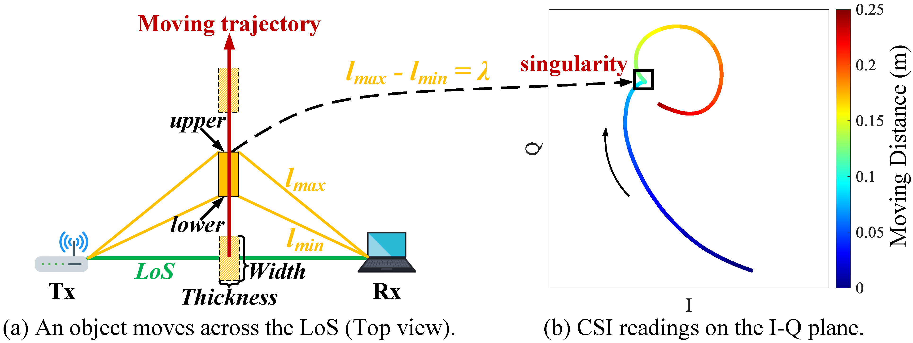
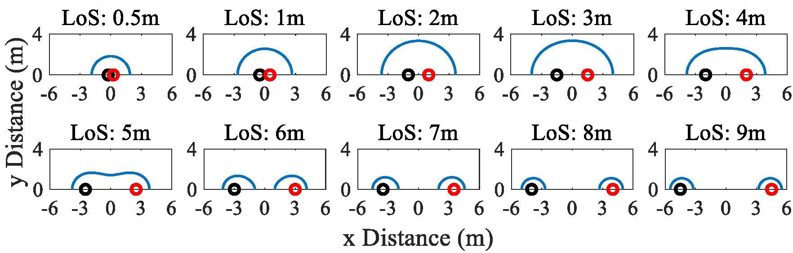

Xuanzhi Wang
I am a third-year Ph.D. student of Computer Science at Peking University under the supervision of Prof. Daqing Zhang. I have broad interests in wireless sensing, mobile computing and wireless networking.
News
Recent Projects
We utilize low-frequency WiFi signals to achieve accurate object size measurement without requiring any learning or training. The key insight is that when an object moves between a pair of WiFi transceivers, the WiFi CSI variations contain singular points (i.e., singularities) and we observe an exciting opportunity of employing the number of singularities to measure the object size. In this work, we model the relationship between the object size and the number of singularities when an object moves near the LoS path, which lays the theoretical foundation for the proposed system to work. By addressing multiple challenges, for the first time, we make WiFi-based object size measurement work on commodity WiFi cards and achieve a surprisingly low median error of 2.6 mm. We believe this work is an important missing piece of WiFi sensing and opens the door to size measurement using low-cost low-frequency RF signals.
Inspired by the SNR (signal-to-noise ratio) metric in communication theory, we propose a new metric named SSNR (sensing-signal-to-noise-ratio) to quantify the sensing capability of WiFi systems. We theoretically model the effect of transmitter-receiver distance on sensing coverage. We show that in LoS scenario, the sensing coverage area increases first from a small oval to a maximal one and then decreases. When the transmitter-receiver distance further increases, the coverage area is separated into two ovals located around the two transceivers respectively. We demonstrate that, instead of applying complex signal processing scheme or advanced hardware, by just properly placing the transmitter and receiver, the two well-known issues in WiFi sensing (i.e., small range and severe interference) can be greatly mitigated. Specifically, by properly placing the transmitter and receiver, the coverage of human walking sensing can be expanded by around 200%. By increasing the transmitter-receiver distance, a target's fine-grained respiration can still be accurately sensed with one interferer sitting just 0.5 m away.
Talks
Publications
Papers:
- WiMeasure: Millimeter-level Object Size Measurement with Commodity WiFi Devices
X Wang, K Niu, A Yu, J Xiong, Z Yao, J Wang, W Li, D Zhang
ACM UbiComp 2023 | paper - LT-Fall: The Design and Implementation of a Life-threatening Fall Detection and Alarming
System
D Zhang, X Zhang, S Li, Y Xie, Y Li, X Wang, D Zhang
ACM UbiComp 2023 | paper - What Can We Learn from Quality Assurance Badges in Open-Source Software?
F Li, Y Lou, X Tan, Z Chen, J Dong, Y Li, X Wang, D Hao, L Zhang
Springer SCIS 2023 | paper - Practical issues and challenges in CSI-based integrated sensing and communication
D Zhang, D Wu, K Niu, X Wang, F Zhang, J Yao, D Jiang, F Qin
IEEE ICC Workshops 2022 | paper - Placement matters: Understanding the effects of device placement for WiFi sensing
X Wang, K Niu, J Xiong, B Qian, Z Yao, T Lou, D Zhang
ACM UbiComp 2022 | paper - Rethinking Doppler effect for accurate velocity estimation with commodity WiFi devices
K Niu, X Wang, F Zhang, R Zheng, Z Yao, D Zhang
IEEE JSAC 2022 | paper - Understanding WiFi signal frequency features for position-independent gesture sensing
K Niu, F Zhang, X Wang, Q Lv, H Luo, D Zhang
IEEE TMC 2022 | paper
Invention patents :
- An algorithm, device, and medium for measuring objects' size contactless
Daqing Zhang, Xuanzhi Wang
China National Intellectual Property Administration 2023 - An algorithm, device, and medium for determining and controlling the sensing coverage of an RF system
Daqing Zhang, Xuanzhi Wang
China National Intellectual Property Administration 2022
Awards